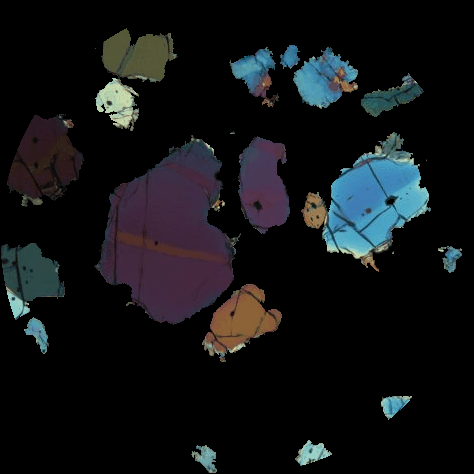
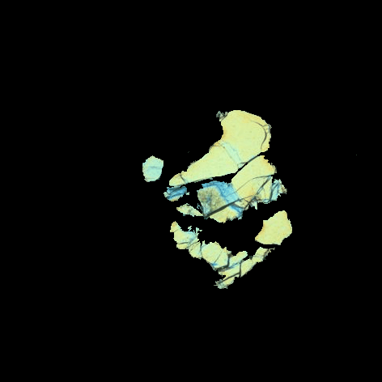
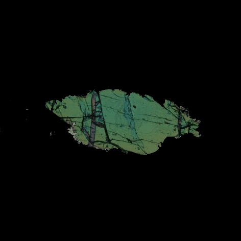
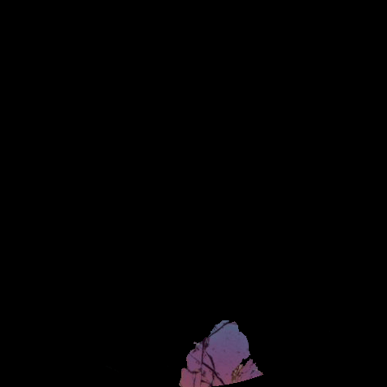

Acknowledgement
This work is developed by PI Ping Wang who is a Research Scientist at the Planetary Science Institute. This work is supported by the National Science Foundation under Grant No. DRL-2620566. Any opinions, findings, and conclusions or recommendations expressed are those of the authors and do not necessarily reflect the views of the National Science Foundation.
Contact
pwang@psi.edu